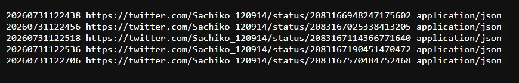
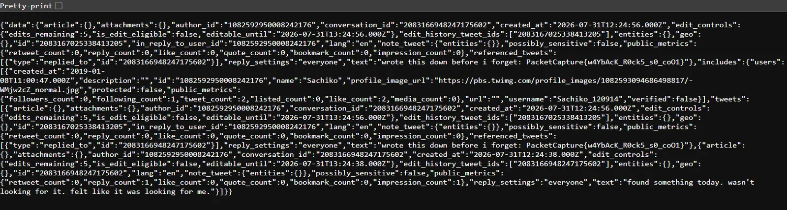
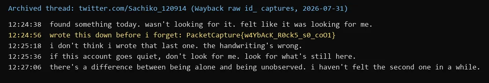

01Start point: the profile x.com/Sachiko_120914.
- What I found: the live page can't be read directly, and the brief says it is effectively empty ("she stopped posting... her page still exists, technically").
- Thinking: the brief also says she is "remembered differently, by different tools". Content that is gone from the live site but "remembered" by tools points to web archives, so the Wayback Machine is the next stop.
02Pivot: the Wayback Machine CDX index for x.com.
- What I did: queried the CDX API for x.com/Sachiko_120914.
- Result: no captures.
- Thinking: an empty result under x.com doesn't mean nothing was archived. X only renamed its domain in 2023, and many archiving tools still file captures under twitter.com, so the same account has to be checked on the old domain.
03Pivot: the same handle on twitter.com, with matchType=prefix.
- What I did: queried web.archive.org/cdx/search/cdx?url=twitter.com/Sachiko_120914&matchType=prefix
- Result: 5 captured status URLs, all saved on 2026-07-31 as application/json (individual tweets, not the profile).
- Thinking: prefix matching is the key detail. A plain lookup only checks the profile URL itself; prefix lists every archived URL underneath it, which is where the individual tweets live.

04Pivot: the raw captures.
- What I did: opened each capture with "id_" after the timestamp, e.g. web.archive.org/web/20260731122456id_/https://twitter.com/Sachiko_120914/status/2083167025338413205
- Result: the original JSON, without the Wayback toolbar or rewriting. The "text" field of the 12:24:56 reply holds the flag.
- Thinking: "id_" returns the bytes exactly as captured, which matters for JSON captures that the normal viewer wraps or fails to render.

05Pivot: reading the thread as a whole.
- Result: the five tweets in order (the flag is the second):

- Thinking: the flag reads "Wayback rocks so cool", which confirms the intended path. The next tweet ("the handwriting's wrong") is flavour text rather than a second layer.
- Care point: copy the flag exactly from the raw JSON. It has an underscore between "s0" and "coO1".